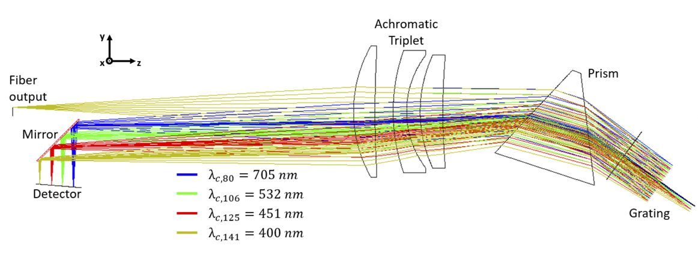
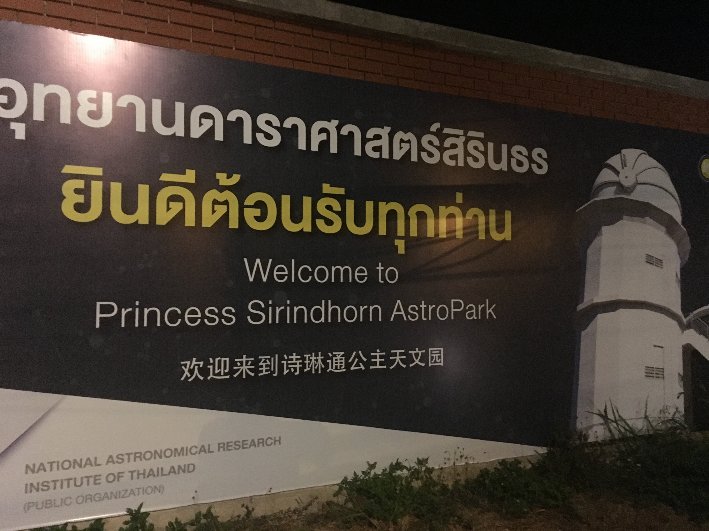

Compact architecture
A folded, double-pass spectrograph built principally from accessible components, with custom optics where they matter.
Optical designUK–Thailand astronomical instrumentation programme
EXOhSPEC combines a folded optical architecture, fibre delivery, active control and an accessible component strategy in a high-resolution spectrograph platform for exoplanet and stellar spectroscopy.

One platform, connected research
EXOhSPEC treats the optics, fibre feed, detector, environment, calibration and control as coupled parts of one instrument. The programme moves between optical simulation, laboratory characterisation and telescope deployment.
A folded, double-pass spectrograph built principally from accessible components, with custom optics where they matter.
Optical designFibre injection, tapering and modal-noise research examine how light delivery affects repeatability.
Fibre systemsCentroids, metrology and environmental telemetry support active-optics and thermal-control development.
CLFCD research trackExplore the measured instrument
Select a numbered point to connect the physical component to its documented role. Locations follow the annotated bench image in MSc thesis Fig. 2.1; software reduction is described separately rather than placed on the optical bench.
01 / Calibration input
The annotated thesis image identifies the calibration-lamp input at the upper-left of the modified bench. It supplies the line-rich spectrum used to monitor detector-plane motion.
Programme milestones
The timeline connects the principal public milestones and research strands. Select a year to update the evidence panel.
SPIE papers described the folded optical design, mechanical collimator development and a replicable off-the-shelf approach.
Read the publication record
At the telescope
The acquisition and guiding unit couples a stellar image at the Thai National Telescope focal plane into an optical fibre while an internal camera supports closed-loop guiding. EXOhSPEC has recorded early astronomical spectra and radial-velocity measurements.

Dedicated research track · updated through V25
Biswajit Jana’s closed-loop feedback research is presented as a focused scientific microsite: V17–V18 measured performance, the V19–V24 thermal-diagnostic chain, the V25 sealed TPU airflow prototype and a searchable 61-report evidence archive. It remains one research strand within the wider programme.